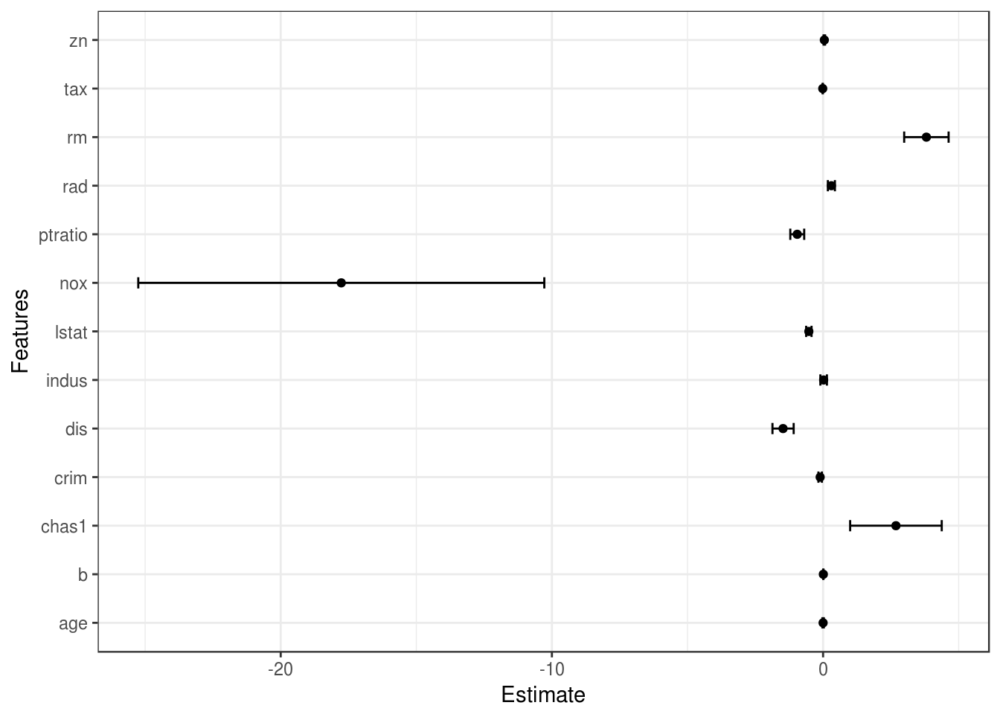
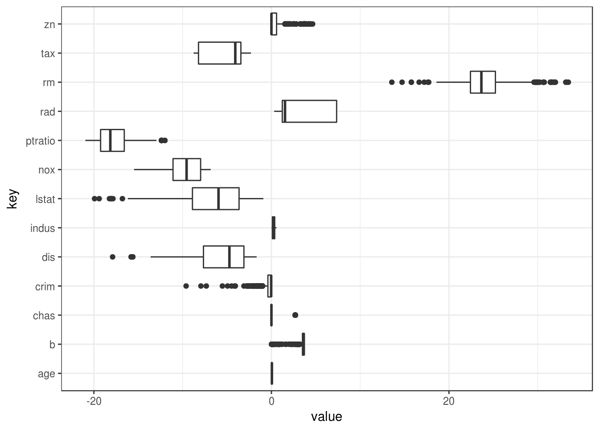

2 Keep it simple
The most straight forward way to achieve explainable machine learning algorithms is to use only a subset algorithms that yield an understandable model structure.
These are:
- Linear models (sparse)
- Decision trees
- Decision rules
In the following chapters these we will talk about the algorithm with it’s variants. Not in detail, only the basics, because there are already a ton of books, videos, tutorials, papers and so on about them. We will focus on how to interpret the models and why they are explainable. The chapter covers linear models, decision trees, decision rules, neighbour methods and graphical models.
2.1 Overview
| Algorithm | Linear | Monotonicity | Interaction built-in |
|---|---|---|---|
| Linear models | Yes | Yes | No |
| Decision trees | No | Not by default | Yes |
| Decision rules | No | Not by default | Yes |
| Naive bayes | Yes | Yes | No |
| Nearest neighbours | No | No | No |
2.2 Linear models
Linear models have been and are still used by statistician, computer scientists and other people with quantitative problems. They learn straightforward linear (and monotonic) relationships between the target and the features. The target changes by a learned weight depending on the feature. Monotonicity makes the interpretation easy.
Linear models can be used to model the dependency of a regression variable (here Y) on K covariates. As the name says, the learned relationships are linear in the form of
\[y_{i} = \beta_{0} + \beta_{1} \cdot x_{i,1} + \ldots + \beta_{K} x_{i,K} + \epsilon_{i}\]
The i-th observation’s outcome is a weighted sum of it’s K features. The \(\beta_{k}\) represent the learned feature weights or coefficients. The \(\epsilon_{i}\) is the error we are still making, the difference between the predicted and actual outcome.
The biggest advantage is the linearity: It makes the estimation procedure straight forward and most importantly these linear equations have an easy to understand interpretation. That is one of the main reasons why the linear model and all it’s descendants are so widespread in academic fields like medicine, sociology, psychology and many more quantitative research fields. In this areas it is important to not only predict e.g. the clinical outcome of a patient, but also quantify the influence of the medication while at the same time accounting for things like sex, age and other variables.
2.2.1 Interpretation
The interpretation of the coefficients:
- Continuous regression variable: For an increase of one point of the variable \(x_{j}\) the estimated outcome changes by \(\beta_{j}\)
- Binary categorical variables: One of the variables is the reference level (in some languages the one that was coded in 0). A change of the variable \(x_{i}\) the reference level to the other category changes the estimated outcome by \(\beta_{i}\)
- categorical variables with many levels: One solution to deal with many variables is to one-hot-encode them, meaning each level gets it’s own column. From a categorical variable with L levels, you only need L-1 columsn, otherwise it is over parameterized. The interpretation for each level is then according to the binary variables. Some language like R allow to
- Intercept \(\beta_{0}\): The interpretation is: Given all continuous variables are zero and the categorical variables are on the reference level, the estimated outcome of \(y_{i}\) is \(\beta_{0}\). The interpretation of \(\beta_{0}\) is usually not relevant.
2.2.2 Interpretation example
| Estimate | Std. Error | |
|---|---|---|
| (Intercept) | 36.4594884 | 5.1034588 |
| per capita crime rate | -0.1080114 | 0.0328650 |
| proportion of residential land zoned for lots over 25,000 sq.ft | 0.0464205 | 0.0137275 |
| proportion of non-retail business acres per town | 0.0205586 | 0.0614957 |
| Charles River dummy variable (= 1 if tract bounds river; 0 otherwise) | 2.6867338 | 0.8615798 |
| nitric oxides concentration (parts per 10 million) | -17.7666112 | 3.8197437 |
| average number of rooms per dwelling | 3.8098652 | 0.4179253 |
| proportion of owner-occupied units built prior to 1940 | 0.0006922 | 0.0132098 |
| weighted distances to five Boston employment centres | -1.4755668 | 0.1994547 |
| index of accessibility to radial highways | 0.3060495 | 0.0663464 |
| full-value property-tax rate per USD 10,000 | -0.0123346 | 0.0037605 |
| pupil-teacher ratio by town | -0.9527472 | 0.1308268 |
| 1000(B - 0.63)^2 where B is the proportion of blacks by town | 0.0093117 | 0.0026860 |
| percentage of lower status of the population | -0.5247584 | 0.0507153 |
Interpretation of a numerical variable (‘average number of rooms per dwelling’): An increase of the average number of rooms by 1 increases the median value of houses in this suburb by \(3800\$ (= 3.8 \cdot 1000)\), given all other features stay the same.
Interpretation of a categorical variable (‘Charles River dummy variable (= 1 if tract bounds river; 0 otherwise)’): The median value of houses in suburbs that bound the Charles River is \(2690\$ (= 2.69 \cdot 1000\$)\) compared to houses that do not, given all other features stay the same.
As you can see in the interpretation examples, the interpretations are always coming with the clause that ‘all other features stay the same’. That’s because of the nature of linear models: All features are input linearly into the function with no interactions (unless explicitly specified). The good side is, that is isolates the interpretation. If you think of the features as turn-switches that you can turn up or down, it is nice to see what happens when you would just turn the switch for one feature, for example the average number of rooms. But this might not reflect the structure of the data, because the features are often correlated. It might not be meaningful to see the effect of turning up average room sizes because it might be strongly correlated with the proportion of owner-occupied units built prior to 1940.
2.2.3 Visual parameter interpretation
2.2.3.1 Weight plot
The information of the coefficient table can also be put into a visualization, which makes the weights and the uncertainty about them can be made understandable on one glance. The weight is displayed as a point and the 95% confidence interval around the point with a line. The 95% confidence interval means that if the linear model was repeated 100 times on
coef_plot = function(mod, alpha = 0.05, remove_intercept = TRUE){
lm_summary = summary(mod)$coefficients
df = data.frame(Features = rownames(lm_summary),
Estimate = lm_summary[,'Estimate'],
std_error = lm_summary[,'Std. Error'])
df$lower = df$Estimate - qnorm(alpha/2) * df$std_error
df$upper = df$Estimate + qnorm(alpha/2) * df$std_error
if(remove_intercept){
df = df[!(df$Features == '(Intercept)'),]
}
ggplot(df) +
geom_point(aes(x=Estimate, y=Features)) +
geom_segment(aes(y=Features, yend=Features, x=lower, xend=upper), arrow = arrow(angle=90, ends='both', length = unit(0.1, 'cm'))) +
my_theme
}
coef_plot(mod) TODO: Add interpetation
2.2.3.2 Effect plot
The weights of the linear model only have meaning, when combined with the actual features. The weights depend on the scale of the features and will be different if you have a features measuring some height and you switch from inches to centemeters. The weight will change, but the actual relationships in your data will not. Also it is important to know the distribution of your feature in the data, because if you have a very low variance, it means that almost all instances will get a similar contribution from this feature. The effect plot can help to understand how much the combination of a weight and a feature contributes to the predictions in your data. Start with the computation of the effects, which is the weight per feature times the feature of an instance: \(eff_{i,k} = w_{k} \cdot x_{i,k}\). The resulting effects are visualized with boxplots: The box contains the effect range for half of your data (25% to 75% effect quantiles). The line in the box is the median effect, so 50% of the instances have a lower and the other half a higher effect on the prediction than the median value. The whiskers are \(+/i 1.58 IQR / \sqrt{n}\), with IQR being the inter quartile range ($q_{0.75} - q_{0.25}). The points are outlier to the whiskers.
get_effects = function(mod){
X = model.matrix(mod)
X = data.frame(predict(mod, type = 'terms'))
means = apply(mod$x, 2, mean) * mod$coefficients
means = means[names(means) != "(Intercept)"]
# predict with type='terms' centers the results, so we have to add the mean again
means_X = matrix(rep(means, times = nrow(X)), nrow=nrow(X), byrow=TRUE)
X = X + means_X
X
}
effect_plot = function(mod, feature_names=NULL){
X = get_effects(mod)
if(!missing(feature_names)){
rownames(X) = feature_names
}
X = gather(X)
ggplot(X) +
geom_boxplot(aes(x=key, y=value, group=key)) +
coord_flip() + my_theme
}
effect_plot(mod) TODO: Add interpetation
2.2.4 Explaining single predictions
Why did a certain instance get the prediction it got from the linear model? This can again be answered by bringing together the weights and features and computing the effect. Now the effect will tell you how much each feature contributed towards the sum of the prediction. This is only meaningful if you compare the instance specific effects with the mean effects. See also the chapter about ‘Justification Narratives’.
i = 1
effects = get_effects(mod)
effects_i = gather(effects[i, ])
predictions = predict(mod)
predictions_mean = mean(predictions)
pred_i = predictions[i]
effect_plot(mod) +
geom_point(aes(x=key, y=value), color = 'red', data = effects_i) +
ggtitle(sprintf('Predicted value for instance: %.2f\n Average predicted value: %.2f', predictions_mean, pred_i))
2.2.5 Interpretation templates
Interpretation of a numerical feature:
An increase of \(x_{k}\) by one unit increases the expectation for \(y\) by \(\beta_x{k}\) units if all other features X stay the same.
Interpretation of a categorical feature:
The category coded with 1 of \(x_{k}\) increases the expectation for \(y\) by \(\beta_{k}\) compared to the reference category (coded with 0).
2.2.6 Coding categorical variables:
There are several ways to represent a categorical variable, which has an influence on the interpretation: http://stats.idre.ucla.edu/r/library/r-library-contrast-coding-systems-for-categorical-variables/ and http://heidiseibold.github.io/page7/
Described above is the treatment coding, which is usually sufficient. Using different codings boils down to creating different matrices from your one column with the categorical feature. I present three different codings, but there are many more. The example has six instances and one categorical feature with 3 levels. The first two instances are in category A, instances three and four are in category B and the last two instances are in category C.
- Treatment coding compares each level to the reference level. The intercept is the mean of the reference group. The first column is the intercept, which is always 1. Column two is an indicator whether instance \(i\) is in category B, columns three is an indicator for category C. There is no need for a column for category A, because than the system would be over specified. Knowing that an instance is neither in category B or C is enough. \[ \begin{pmatrix} 1 & 0 & 0 \\ 1 & 0 & 0 \\ 1 & 1 & 0 \\ 1 & 1 & 0 \\ 1 & 0 & 1 \\ 1 & 0 & 1 \\ \end{pmatrix} \]
- Effect coding compares each level to the overall mean of \(y\). The first column is again the intercept. The weight \(\beta_{0}\) which is associated to the intercept represents the overall mean and \(\beta_{1}\), the weight for column two is the difference between the overall mean and category B. The overall effect of category B is \(\beta_{0}\) + _{1}$. Interpretation for category C is equivalent. For the reference category A, \(-(\beta_{1} + \beta_{2})\) is the difference of the category C to the overall mean and \(\beta_{0} -(\beta_{1} + \beta_{2})\) the overall effect of category C. \[ \begin{pmatrix} 1 & -1 & -1 \\ 1 & -1 & -1 \\ 1 & 1 & 0 \\ 1 & 1 & 0 \\ 1 & 0 & 1 \\ 1 & 0 & 1 \\ \end{pmatrix} \]
- Dummy coding compares each level to the level mean of \(y\). If all level are have the same frequency the resulting coefficients will be the same as in effect coding. Note that the intercept was dropped here. \[ \begin{pmatrix} 1 & 0 & 0 \\ 1 & 0 & 0 \\ 0 & 1 & 0 \\ 0 & 1 & 0 \\ 0 & 0 & 1 \\ 0 & 0 & 1 \\ \end{pmatrix} \]
2.2.7 Assuring sparsity in linear models
Lasso, Ridge, elasticnet, forward/backward variable selection, dimensionality reduction, … UNDER CONSTRUCTION
2.2.8 The disadvantages of linear models
They can only represent linear relationships as the name suggests. Each non-linearity or interaction has to be hand-crafted and explicitly given to the model as an input feature. Because of possible high correlation between features, it is possible that a feature that is positively correlated with the outcome might get a negative weight in a linear model, because in the high dimensional space it is negatively correlated. An example: You have a model to predict the rent price and have features like number of rooms and size of the flat. Of course flat size and room number are highly correlated, the bigger a flat the more rooms it has. If you now take both variables into a linear model it might happen, that the flat size is the better predictor and get’s a large positive weight. The room number might end up getting a negative weight, because given that a flat has the same size, increasing the number of rooms could make it less valuable.
2.2.9 Towards complexer relationships within linear model class
- Adding interactions
- Adding non-linear terms like polynomials
- Stratifying data by variable and fitting linear models on subsets
2.2.10 Linear models beyond gaussian regression
- Logistic regression
- GAMs
- Quantile regression
2.3 Decision trees
2.3.1 Explaining: Treeinterpreter
https://github.com/andosa/treeinterpreter ## RuleFit ## Decision rules Decision rules are a class of machine learning model that consists of if X then Y statements. Within the if statement there are sets of features and conditions on them (like X > 4) and Y is a statement about the outcome of interest. One decision rule from a model predicting rents could be:
If a flat is bigger than 100 square meters and has a garden the average rent is 2000 Euro per month.
Let’s split that up: - ‘Flat is bigger than 100 square meters’ is the first part of the IF statement - ‘Flat has a garden’ is a second conditions in the IF. - Both are connected with an ‘AND’, so both have to be true for the rule to apply - Predicted outcome (THEN) is that the average rent is 2000 Euro per month.
RULE: IF CONDITIONS THEN TARGET
Arguably decision rules are the most simple classifier in terms of understandability. They are very close to natural language and the way we think. Of course it relies on using sensible, understandable features and the number of conditions within the if statement.
Usually there is more then one rule to describe the associations of the features with the outcome. In our example we only have one rule covering big appartments with flats, but what about a smaller apartment?
Rules can be induced from trees. Each path through the tree is one rule. Rules made of trees have the nice
There are many ways how to induce those kind of rules from a training dataset. The induction algorithms differ in how they create the rules: - Do they allow overlapping rules and how are conflicts handled? - Do they cover the whole training set?
2.3.2 Association rule mining
Concepts: - Support - Confidence - Lift
2.3.3 Rule induction
2.3.3.1 The Bayesian Machine List
[BML]
Target: Multi-class classification with labels 1, …, L and training data \({(x_i, y_i)}_{i=1}^n\), where \(x_i \in \R\) are the features for observation \(i\) and \(y_i \in {1, ..., L}\) are the labels.
Algorithm: 1. Generate a list of rules $ r = 1, …, R$ with a rule-mining Algorithm 2. Sample permutation of rules using \(\pi\) from prior \(P(p, C)\) 3. Using this ordering, select the first rule that applies, in that it matches the observed feature \(x_i\). Call the rule \(\tilde{r}_i\) 4. Draw a label \(y_i\) from a Dirichlet-Multinomial distribution \(\Theta^{\tilde{r}_i}\), with Dirichlet parameters \(\alpha_1, ..., \alpha_L\) and counts $n_{_i 1}, …, \(n_{\tilde{r}_i L}\) for rule \(\tilde{r}_i\) chosen in the previous step.
[BML] Letham, B., Rudin, C., Mccormick, T. H., & Madigan, D. (2010). An Interpretable Stroke Prediction Model Using Rules and Bayesian Analysis. AAAI Technical Report WS-13-17, (609), 65–67.
2.4 Decision tables
2.5 Nearest neighbours
2.5.1 Learning deep k-nearest neighbour representations
2.6 Bayesian network classifiers
2.7 Naive Bayes Classifier and other graphical models
2.7.1 Naive bayes
Good in case you want interpretation of all features. Bad: No interaction, but even strong assumption of independence of features given the class. But if you indeed have independent features, then it might be the best model.
2.7.2 More general bayesian network approache(s)
2.7.2.1 Bayesian Network-Augmented Naïve Bayes (BAN) illustrated
2.7.2.2 General Bayesian Network
2.8 Prototypes
2.9 Interpretation overview
INSERT HERE: One example of classification task and one for regression task plus for each a table with the interpretations per model (maybe only example for one variable). Plus verbal template for each interpretation.